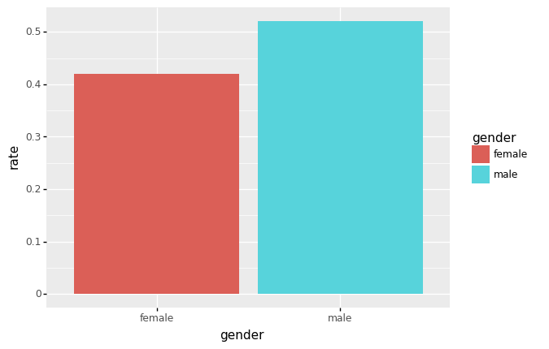
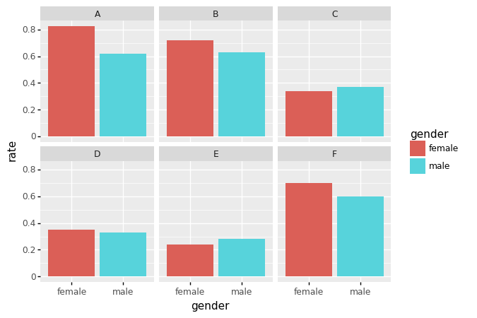
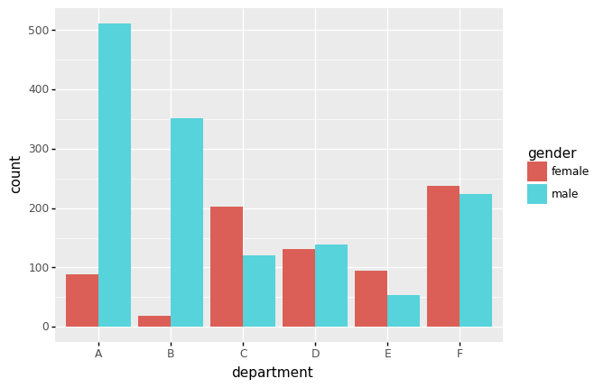
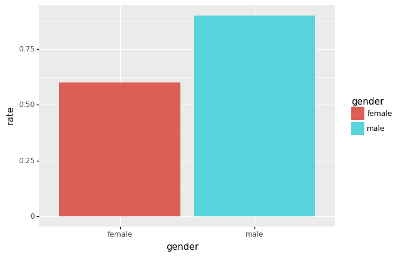
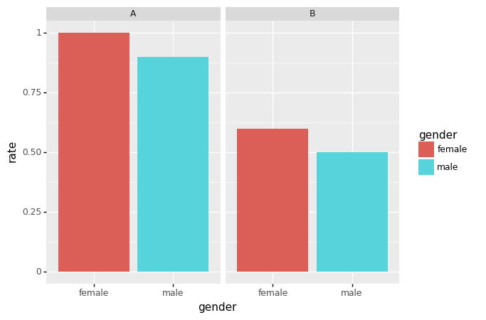
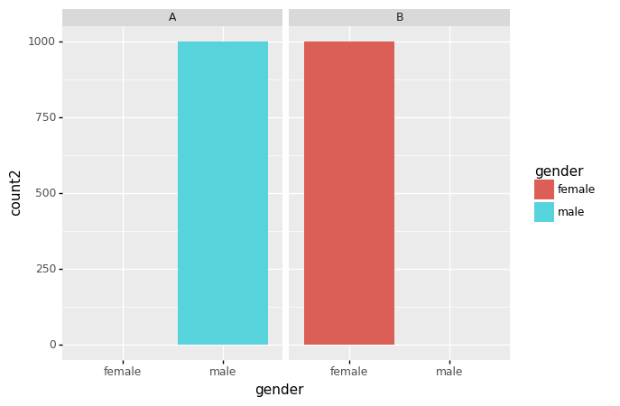

import pandas as pd
import numpy as np
from plotnine import *심슨의 역설
- 버클리대학교의 입학데이터 - https://github.com/guebin/DV2022/blob/master/_notebooks/ds.pdf
- 주장: 버클리대학에 gender bias가 존재한다.
- 1973년 가을학기의 입학통계에 따르면 지원하는 남성이 여성보다 훨씬 많이 합격했고, 그 차이가 너무 커서 우연의 일치라 보기 어렵다.
df=pd.read_csv("https://raw.githubusercontent.com/guebin/DV2022/master/posts/Simpson.csv",index_col=0,header=[0,1])\
.stack().stack().reset_index().rename({'level_0':'department','level_1':'result','level_2':'gender',0:'count'},axis=1)
df| department | result | gender | count | |
|---|---|---|---|---|
| 0 | A | fail | female | 19 |
| 1 | A | fail | male | 314 |
| 2 | A | pass | female | 89 |
| 3 | A | pass | male | 511 |
| 4 | B | fail | female | 7 |
| 5 | B | fail | male | 208 |
| 6 | B | pass | female | 18 |
| 7 | B | pass | male | 352 |
| 8 | C | fail | female | 391 |
| 9 | C | fail | male | 204 |
| 10 | C | pass | female | 202 |
| 11 | C | pass | male | 121 |
| 12 | D | fail | female | 244 |
| 13 | D | fail | male | 279 |
| 14 | D | pass | female | 131 |
| 15 | D | pass | male | 138 |
| 16 | E | fail | female | 299 |
| 17 | E | fail | male | 137 |
| 18 | E | pass | female | 94 |
| 19 | E | pass | male | 54 |
| 20 | F | fail | female | 103 |
| 21 | F | fail | male | 149 |
| 22 | F | pass | female | 238 |
| 23 | F | pass | male | 224 |
시각화1: 전체합격률
- df1
(df.query('gender=="female" and result=="fail"')['count']).sum()1063df.groupby(['gender', 'result']).agg({'count':np.sum}).reset_index()| gender | result | count | |
|---|---|---|---|
| 0 | female | fail | 1063 |
| 1 | female | pass | 772 |
| 2 | male | fail | 1291 |
| 3 | male | pass | 1400 |
- df11
df.groupby('gender').agg({'count':np.sum}).reset_index()| gender | count | |
|---|---|---|
| 0 | female | 1835 |
| 1 | male | 2691 |
- df1과 df2를 합치자
- merge: 두개의 데이터프레임을 합친다.
_df1=df.groupby(['gender', 'result']).agg({'count':np.sum}).reset_index()
_df2=df.groupby('gender').agg({'count':np.sum}).reset_index()
pd.merge(_df1,_df2)
# _df1과 _df2의 count변수명이 다르기 때문에 아래와 같이 아무것도 안나옴| gender | result | count |
|---|
df.groupby('gender').agg({'count':np.sum}).reset_index().rename({'count':'count2'},axis=1)| gender | count2 | |
|---|---|---|
| 0 | female | 1835 |
| 1 | male | 2691 |
- merge 방법 1
_df1=df.groupby(['gender', 'result']).agg({'count':np.sum}).reset_index()
_df2=df.groupby('gender').agg({'count':np.sum}).reset_index().rename({'count':'count2'},axis=1)
pd.merge(_df1,_df2)| gender | result | count | count2 | |
|---|---|---|---|---|
| 0 | female | fail | 1063 | 1835 |
| 1 | female | pass | 772 | 1835 |
| 2 | male | fail | 1291 | 2691 |
| 3 | male | pass | 1400 | 2691 |
- merge 방법2
df.groupby(['gender', 'result']).agg({'count':np.sum}).reset_index()\
.merge(df.groupby('gender').agg({'count':np.sum}).reset_index().rename({'count':'count2'},axis=1))| gender | result | count | count2 | |
|---|---|---|---|---|
| 0 | female | fail | 1063 | 1835 |
| 1 | female | pass | 772 | 1835 |
| 2 | male | fail | 1291 | 2691 |
| 3 | male | pass | 1400 | 2691 |
- 비율계산
df.groupby(['gender', 'result']).agg({'count':np.sum}).reset_index()\
.merge(df.groupby('gender').agg({'count':np.sum}).reset_index().rename({'count':'count2'},axis=1))\
.eval('rate = count/count2')| gender | result | count | count2 | rate | |
|---|---|---|---|---|---|
| 0 | female | fail | 1063 | 1835 | 0.579292 |
| 1 | female | pass | 772 | 1835 | 0.420708 |
| 2 | male | fail | 1291 | 2691 | 0.479747 |
| 3 | male | pass | 1400 | 2691 | 0.520253 |
- 시각화
data1=df.groupby(['gender', 'result']).agg({'count':np.sum}).reset_index()\
.merge(df.groupby('gender').agg({'count':np.sum}).reset_index().rename({'count':'count2'},axis=1))\
.eval('rate = count/count2')
ggplot(data1.query('result == "pass"'))+geom_col(aes(x='gender',fill='gender',y='rate'))
- 결론: 남자의 합격률이 더 높다. \(\to\) 성차별?
시각화2: 학과별 합격률
- df2
df.groupby(['department','gender']).agg({'count':np.sum}).reset_index().rename({'count':'count2'},axis=1)| department | gender | count2 | |
|---|---|---|---|
| 0 | A | female | 108 |
| 1 | A | male | 825 |
| 2 | B | female | 25 |
| 3 | B | male | 560 |
| 4 | C | female | 593 |
| 5 | C | male | 325 |
| 6 | D | female | 375 |
| 7 | D | male | 417 |
| 8 | E | female | 393 |
| 9 | E | male | 191 |
| 10 | F | female | 341 |
| 11 | F | male | 373 |
- merge
df.groupby(['department','gender']).agg({'count':np.sum}).reset_index().rename({'count':'count2'},axis=1)\
.merge(df)| department | gender | count2 | result | count | |
|---|---|---|---|---|---|
| 0 | A | female | 108 | fail | 19 |
| 1 | A | female | 108 | pass | 89 |
| 2 | A | male | 825 | fail | 314 |
| 3 | A | male | 825 | pass | 511 |
| 4 | B | female | 25 | fail | 7 |
| 5 | B | female | 25 | pass | 18 |
| 6 | B | male | 560 | fail | 208 |
| 7 | B | male | 560 | pass | 352 |
| 8 | C | female | 593 | fail | 391 |
| 9 | C | female | 593 | pass | 202 |
| 10 | C | male | 325 | fail | 204 |
| 11 | C | male | 325 | pass | 121 |
| 12 | D | female | 375 | fail | 244 |
| 13 | D | female | 375 | pass | 131 |
| 14 | D | male | 417 | fail | 279 |
| 15 | D | male | 417 | pass | 138 |
| 16 | E | female | 393 | fail | 299 |
| 17 | E | female | 393 | pass | 94 |
| 18 | E | male | 191 | fail | 137 |
| 19 | E | male | 191 | pass | 54 |
| 20 | F | female | 341 | fail | 103 |
| 21 | F | female | 341 | pass | 238 |
| 22 | F | male | 373 | fail | 149 |
| 23 | F | male | 373 | pass | 224 |
- 위와 같은 거긴 한데 count 뒤로 보내려고 아래와 같이 작성
data2=df.merge(df.groupby(['department','gender']).agg({'count':np.sum}).reset_index().rename({'count':'count2'},axis=1))\
.eval('rate=count/count2')
data2| department | result | gender | count | count2 | rate | |
|---|---|---|---|---|---|---|
| 0 | A | fail | female | 19 | 108 | 0.175926 |
| 1 | A | pass | female | 89 | 108 | 0.824074 |
| 2 | A | fail | male | 314 | 825 | 0.380606 |
| 3 | A | pass | male | 511 | 825 | 0.619394 |
| 4 | B | fail | female | 7 | 25 | 0.280000 |
| 5 | B | pass | female | 18 | 25 | 0.720000 |
| 6 | B | fail | male | 208 | 560 | 0.371429 |
| 7 | B | pass | male | 352 | 560 | 0.628571 |
| 8 | C | fail | female | 391 | 593 | 0.659359 |
| 9 | C | pass | female | 202 | 593 | 0.340641 |
| 10 | C | fail | male | 204 | 325 | 0.627692 |
| 11 | C | pass | male | 121 | 325 | 0.372308 |
| 12 | D | fail | female | 244 | 375 | 0.650667 |
| 13 | D | pass | female | 131 | 375 | 0.349333 |
| 14 | D | fail | male | 279 | 417 | 0.669065 |
| 15 | D | pass | male | 138 | 417 | 0.330935 |
| 16 | E | fail | female | 299 | 393 | 0.760814 |
| 17 | E | pass | female | 94 | 393 | 0.239186 |
| 18 | E | fail | male | 137 | 191 | 0.717277 |
| 19 | E | pass | male | 54 | 191 | 0.282723 |
| 20 | F | fail | female | 103 | 341 | 0.302053 |
| 21 | F | pass | female | 238 | 341 | 0.697947 |
| 22 | F | fail | male | 149 | 373 | 0.399464 |
| 23 | F | pass | male | 224 | 373 | 0.600536 |
- 시각화
ggplot(data2.query('result=="pass"'))+geom_col(aes(x='gender',fill='gender',y='rate'))\
+facet_wrap('department')
- 학과별로 살펴보니 A,B,D,F는 여성 합격률이 더 높다.
- 교재설명: 여성의 합격률이 낮은 학과(인기있는 학과)에만 많이 지원하였기 때문
ggplot(data2.query('result=="pass"'))+geom_col(aes(x='department',fill='gender',y='count'),\
position='dodge')
- 살펴보니 합격률이 높은 A,B학과의 경우 상대적으로 남성이 많이 지원하였음. 합격률이 낮은 C,D학과는 상대적으로 여성이 많이 지원함. D,F의 지원수는 비슷
HW
df = pd.read_csv("https://raw.githubusercontent.com/guebin/DV2022/master/posts/Simpson2.csv")
df| department | result | gender | count | |
|---|---|---|---|---|
| 0 | A | fail | female | 0 |
| 1 | A | fail | male | 100 |
| 2 | A | pass | female | 1 |
| 3 | A | pass | male | 900 |
| 4 | B | fail | female | 400 |
| 5 | B | fail | male | 1 |
| 6 | B | pass | female | 600 |
| 7 | B | pass | male | 1 |
시각화1: 남녀합격률 시각화
df.groupby(['gender']).agg({'count':np.sum}).reset_index().rename({'count':'count2'},axis=1)| gender | count2 | |
|---|---|---|
| 0 | female | 1001 |
| 1 | male | 1002 |
datahw=df.groupby(['gender']).agg({'count':np.sum}).reset_index().rename({'count':'count2'},axis=1)\
.merge(df).eval('rate = count/count2')
datahw| gender | count2 | department | result | count | rate | |
|---|---|---|---|---|---|---|
| 0 | female | 1001 | A | fail | 0 | 0.000000 |
| 1 | female | 1001 | A | pass | 1 | 0.000999 |
| 2 | female | 1001 | B | fail | 400 | 0.399600 |
| 3 | female | 1001 | B | pass | 600 | 0.599401 |
| 4 | male | 1002 | A | fail | 100 | 0.099800 |
| 5 | male | 1002 | A | pass | 900 | 0.898204 |
| 6 | male | 1002 | B | fail | 1 | 0.000998 |
| 7 | male | 1002 | B | pass | 1 | 0.000998 |
ggplot(datahw.query('result=="pass"'))+geom_col(aes(x='gender',fill='gender',y='rate'))
시각화2: 학과별 남녀합격률 시각화
datahw2=df.merge(df.groupby(['department','gender']).agg({'count':np.sum}).reset_index().rename({'count':'count2'},axis=1))\
.eval('rate = count/count2')
ggplot(datahw2.query('result=="pass"'))+geom_col(aes(x='gender',fill='gender',y='rate'))\
+facet_wrap('department')
- A학과: 쓰면 거의 붙는 학과
- B학과: 쓰면 반정도 붙는 학과
시각화3: 학과별 지원자 수 시각화
datahw3=df.groupby(['department','gender']).agg({'count':np.sum}).reset_index().rename({'count':'count2'},axis=1)
ggplot(datahw3)+geom_col(aes(x='gender',fill='gender',y='count2'))+facet_wrap('department')
- 여학생은 쓰면 붙는 A학과에는 거의 지원안함, 대신에 쓰면 반정도 붙는 B학과에 대부분 지원함